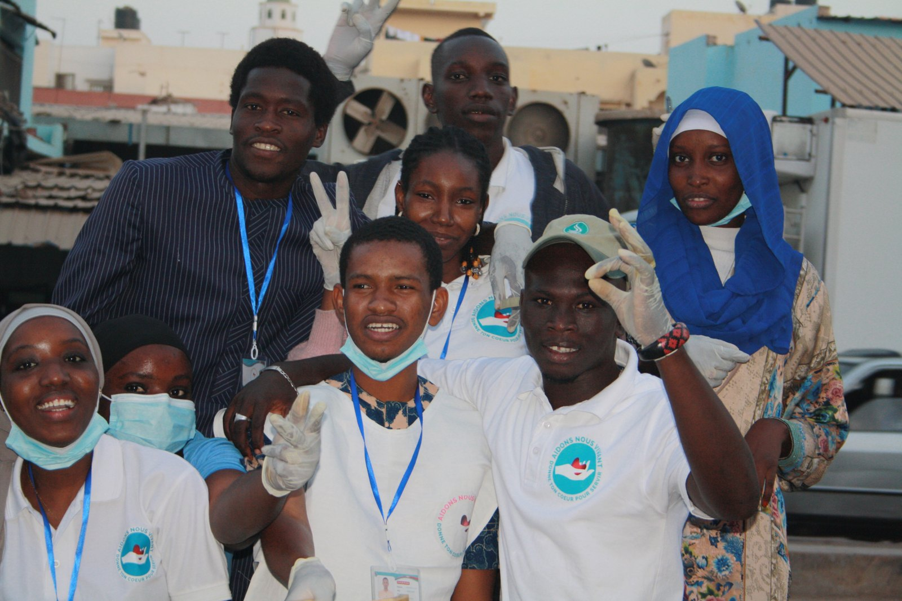
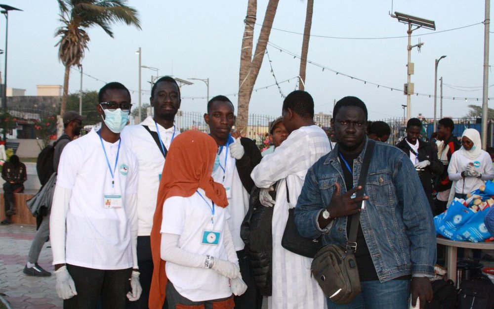

Donne ton cœur pour servir
Depuis 2021, nous mobilisons des bénévoles au Sénégal et dans la diaspora pour redonner dignité, soins et espoir à ceux que la vie a fragilisés.

Rassembler les bonnes volontés, agir avec le cœur
Aidons Nous Vivant est une association à but non lucratif, non confessionnelle, non clanique et apolitique, créée pour rassembler des bénévoles prêts à servir leur pays et venir en aide aux plus nécessiteux.
Découvrir notre histoireNotre vision
Un monde solidaire où chacun, guidé par son cœur, devient acteur du changement.
Notre mission
Soutenir les enfants et les femmes dans la défense de leurs droits et leur lutte contre la pauvreté.


Région après région
Des actions concrètes, chaque année
 Nov. 2025
Nov. 2025Campagne médicale — Fass Ngom
Consultations, dépistages, soins dentaires et dons de médicaments.
 Juil. 2025
Juil. 2025Soutien alimentaire aux daaras
Distribution de denrées à deux daaras de la région de Kaolack.

Mars 2025Ramadan 2025 — Don de Ndogou
Un moment de partage à Saint-Louis.
Suivez nos actions au quotidien
Nous partageons nos actions, nos campagnes et la vie de l'association sur @aidons_nous_vivant.
Chaque cœur compte
Un geste aujourd'hui, c'est un repas distribué, un enfant soigné, une famille soutenue.
❤ Faire un don